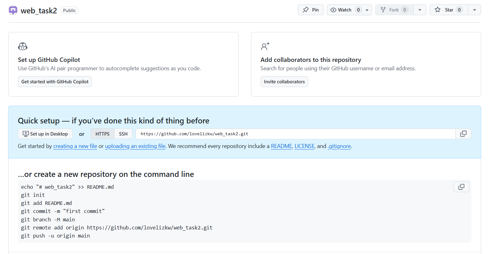
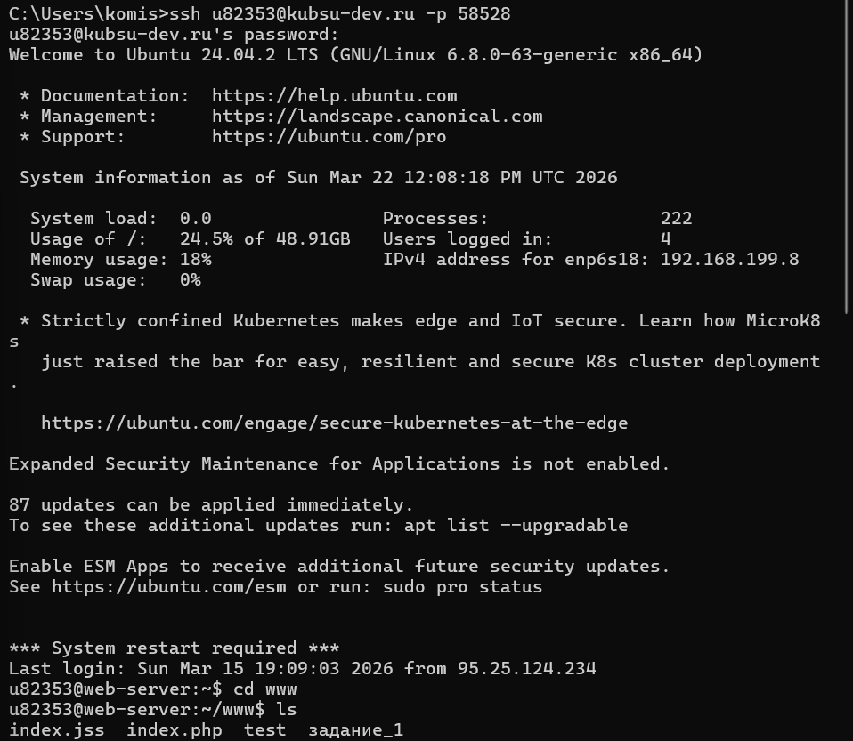
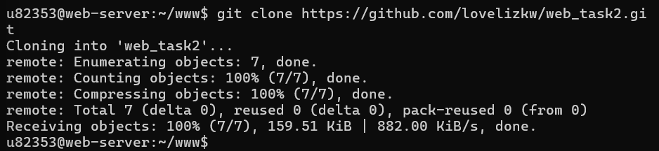
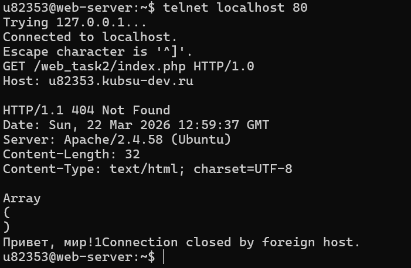
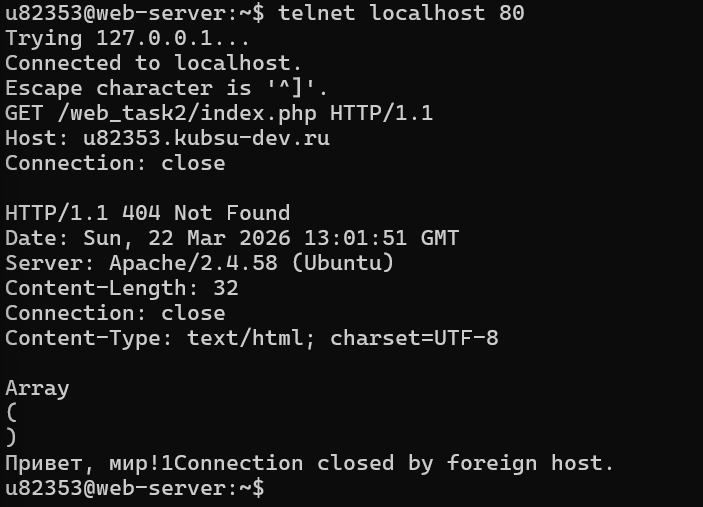
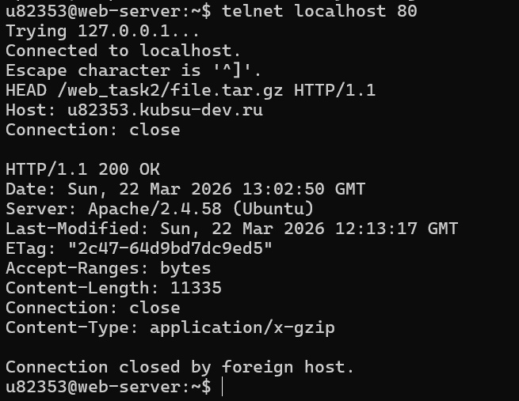
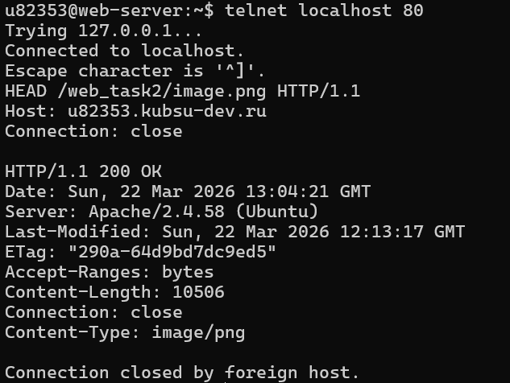
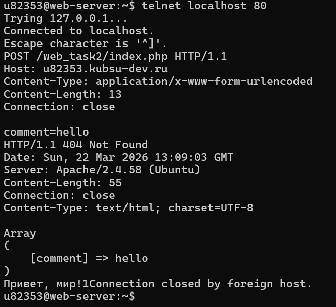
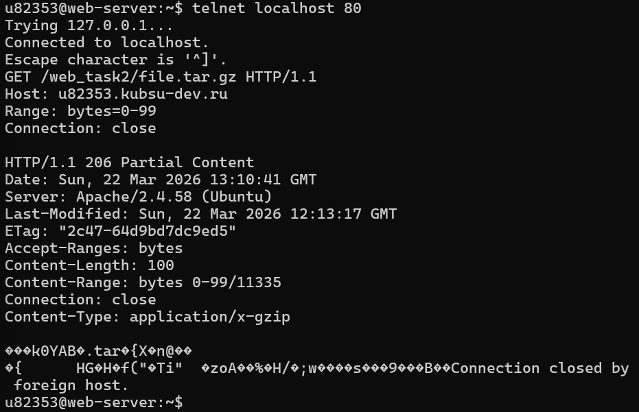
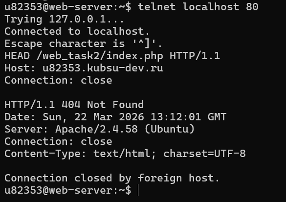

Домен: http://u82353.kubsu-dev.ru
Путь к файлам: /web_task2/
Файлы (index.php, file.tar.gz, image.png и др.) загружены в репозиторий GitHub, после чего размещены на учебном веб-сервере в каталоге /www/web_task2. Доступность файлов проверена в браузере по адресу учебного домена.



Отправлен запрос GET на корневой путь с использованием версии HTTP 1.0.

Выполнен запрос GET к внутренней странице index.php с заголовком Host и Connection: close.

С помощью метода HEAD получены заголовки ответа, включая поле Content-Length, показывающее размер файла.

Методом HEAD получены заголовки, где в Content-Type указан медиатип ресурса (image/png).

Отправлен POST-запрос с параметром comment в теле сообщения. В ответе отображается содержимое массива $_POST.

Выполнен GET-запрос с заголовком Range: bytes=0-99. Сервер вернул статус 206 Partial Content и ровно 100 байт данных.

Методом HEAD получены заголовки ответа, где в Content-Type указана кодировка charset=UTF-8.
